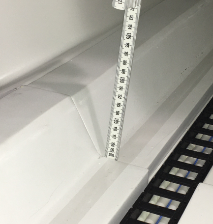
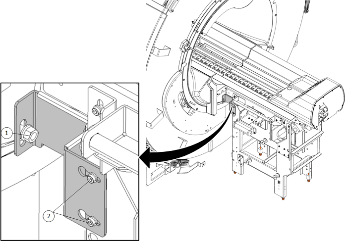
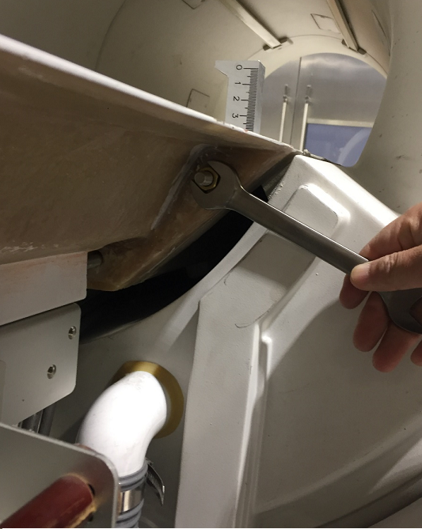
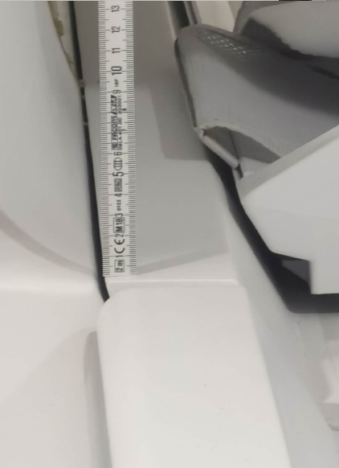
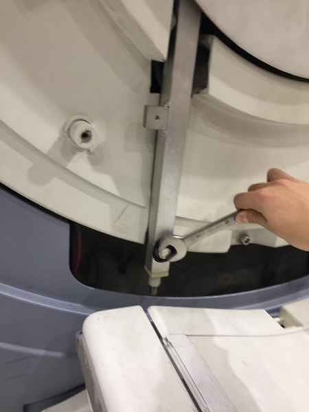
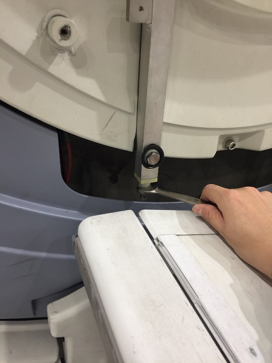
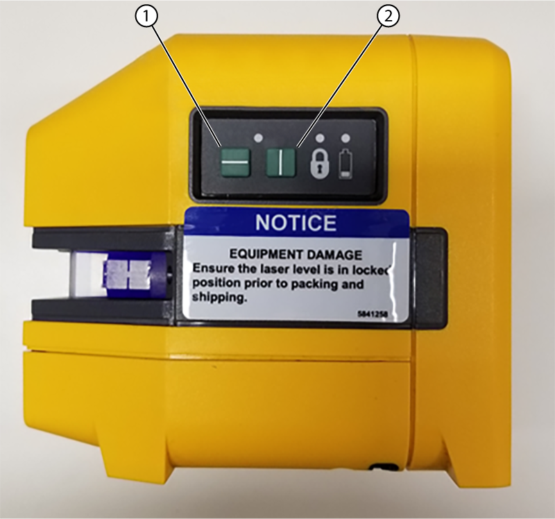
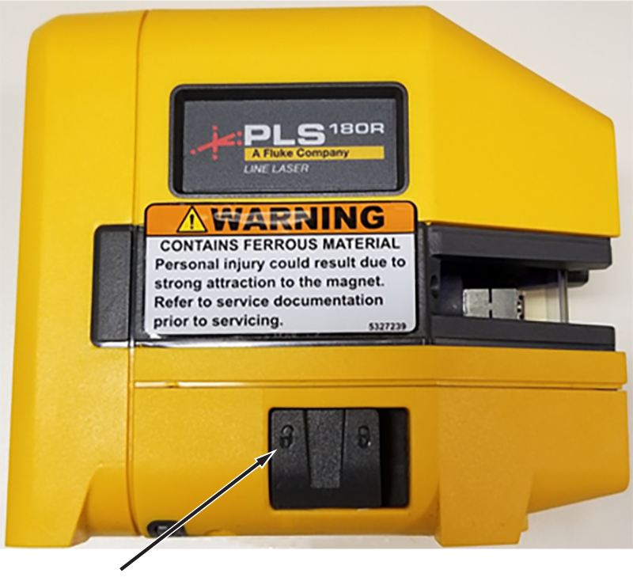
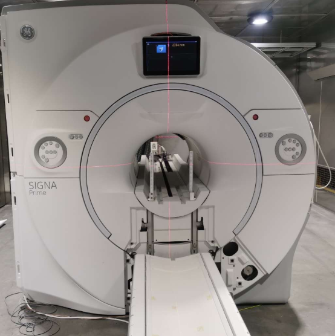
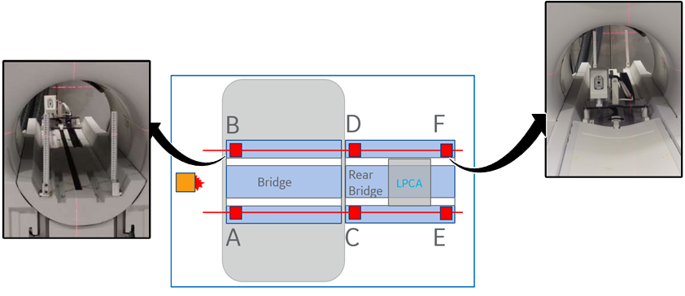

- Object ID: 00000018WIA302CA950GYZ
- Topic ID: id_2025931 Version: 2.6
- Date: Mar 27, 2024, 3:30:19 AM
Front and rear bridge leveling
Aligning the Front Bridge
Procedure
- Move cradle to end of rear bridge.
- Release cradle from LPCA and pull cradle back to home position.
- (For the LHFT) Lower patient table to lowest position.
- (For the FHFT) Install the caster wheels and move away.
- Measure the height difference between the rail surface of bridge and rear bridge. This difference should be less than ± 2 mm on each side. This can be done using the folding ruler (5897974).Note The folding ruler has a very small amount of ferrous content. Use caution when using it near the magnet.
Figure 1. Measure the longitudinal distance 
- If adjustment is required:
- Loosen the nuts and screws between the magnet and rear pedestal.
Figure 2. Unlock the rear pedestal 
1 Nuts 2 Screws - loosen the four nuts attaching the bridge to the rear pedestal.
Figure 3. Loosen four nuts 
- Loosen the nuts and screws between the magnet and rear pedestal.
- Align the bridge with the rear pedestal. Fasten all the screws and nuts after alignment completed.
- Measure the height difference between the front bridge shoulder surface to the front endbell surface at both left and right side. The front bridge surface should be 0mm- 4mm above than front endbell surface. This can be done using the folding ruler.
Figure 4. Measure the longitudinal distance 
- If adjustment is required, loosen two bolts that fasten the bridge support.
Figure 5. Loosen two bolts 
- Align the bridge by adjusting the nuts.
Figure 6. Loose two nuts 
- After adjustment is complete, tighten the bolts.
Front and rear bridge leveling
Procedure
- Attach the laser level (5831466) to the coupling on the tripod (5829559) and turn on the vertical and horizontal laser lines.
Figure 7. Laser level toggles 
1 Horizontal laser line 2 Vertical laser line - Make sure the laser level in is self-leveling mode.
Figure 8. Laser level in self-leveling mode 
- Set up the laser level and tripod such that the horizontal laser line can be seen above the LPCA in the rear of the scan room.
Figure 9. Laser level setup 
- Place Vertical Alignment Tools at 6 locations above the Bridge and rear bridge rail surface. (Front side of Bridge, front and rear side of Rear Bridge)Note Do not lean on the rear pedestal while measuring as it could affect the measurement. The vertical rulers can be turned at an angle to view if required.
Figure 10. Vertical rulers on the rear pedestal 
A-F: Alignment tool position
- Record the height of the horizontal laser line on each vertical alignment tools in mm.
- Check the values of A and B position which on the front bridge. If the differences is more than 2mm, adjust bridge support until the differences less than 2mm. The process of adjustment refer to Aligning the Front Bridge. Define the average value of these two positions as target value.
- Check the four values of C ~ F in rear pedestal. If the differences between reading value and target value are more than 2mm, adjust the corresponding position leveling feet until 4 position all match the range.
- Make sure all feet are touching the ground.
- Lock the rear pedestal.